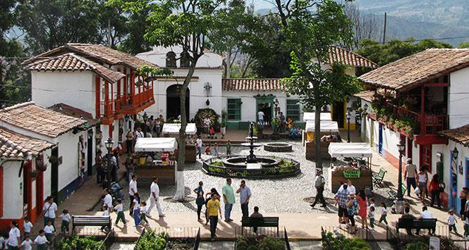
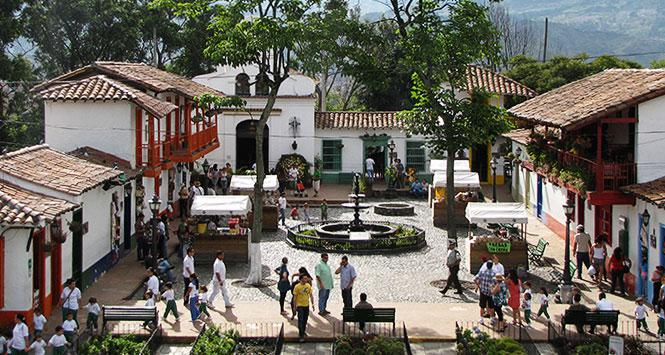

La subregión está conformada por 10 municipios:
La subregión cuenta con 1.152 kilómetros cuadrados (km²). Limita con las subregiones de Norte, Nordeste, Oriente, Suroeste y Occidente.
El Valle de Aburrá está ubicado en el centro – sur del departamento de Antioquia, en medio de la Cordillera Central de los Andes. Es atravesado por el río Medellín – Aburrá – Porce, que recorre la subregión de norte a sur y se convierte en un eje estructurante importante de la conurbación y de la estructura espacial urbano regional.

 
